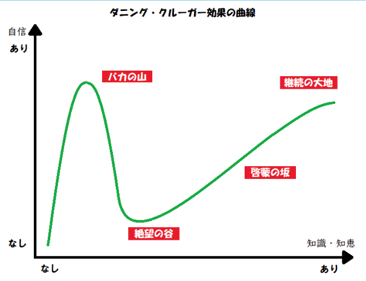

Yoroshiku Wiki
Shu Tsuchida
回り込みの確認のための要素です。Geminiにふにゃふにゃなドラえもんについて説明してもらいました。ふにゃふにゃなドラえもん」は、ドラえもんの具体的な形状や動きを指すのではなく、彼の状態や性質を、触覚的な言葉である「ふにゃふにゃ」を用いて間接的に表現するものです。例えば、普段は頼りになるドラえもんが、珍しく自信を失っていたり、弱気になっていたりする様子を「今日のドラえもんはなんだかふにゃふにゃしている」と表現することがあります。これは、彼の精神的な不安定さや頼りがいがない印象を、あたかも柔らかく形が定まらない物体のように捉えているわけです。また、ドラえもんの優しさや柔軟な思考を表現する際に、「彼のふにゃふにゃとした優しさがのび太を包み込む」といったように、物理的な柔らかさとは異なる、受容的で穏やかな性質を「ふにゃふにゃ」という言葉で表すこともあります。このように、比喩的な表現としての「ふにゃふにゃ」は、ドラえもんの目に見えない内面的な状態や性格の特徴を、より感覚的に、そして印象的に伝えるための言葉として用いられます。文脈によってその意味合いは微妙に変化しますが、いずれの場合も、ドラえもんというキャラクターをより多角的に理解するための補助的な表現として機能していると言えるでしょう。
自己紹介
24歳です。奈良出身, 大学東京の卒業から京都です。週１は出社したいのでリモートはじまってからも通勤圏内だと嬉しいですね🧐
どうなるにしても京都の美味しいご飯なりスイーツなりグルメは色々行きたいところ、、、食べログのブロンズとかシルバーの称号って、普通コース料理とかの高級店に付与されるもので、特にシルバーはスイーツ部門だと年に0〜２店舗くらいしか選出されないほど希少。何ですけど京都にはそのシルバーを受賞してる和菓子屋さん(嘯月{しょうげつ})があるので、少なくともそこは早いうちに行きたいですね。
そこに限らず遊びもしたい、、周辺の県に結構行きやすい場所でもあると思うので隙をみて行きたいですね。
カラオケ
趣味です。大学１年生の頃からハマっててそこそこ行ってました。週に１回は行ってたとしたら６年間で300回は行ってるわけですね、習慣恐ろしや、、一回1200円かかるとしたら36万円かかっているわけですね、恐ろしや、、、
ちなみにカラオケDAMの機材はAmazonで100万円くらいで売ってます。たけ〜〜日々機材が新しくなることを考えたら無理ですね🙂↔️
カラオケこんなに行ってますが、うまさでいうとダニングクルーガー曲線でいう"絶望の谷"を超えて"啓蒙の坂"に差し当たったあたりです。

あとカラオケ関連で曲を聴くのも好きです。全曲知ってるとかじゃないけど、サカナクションとか米津とか好きです、無難やね。
広く浅くでいろいろ聴くのが好きなので、おしゃ曲マニアの方、気をてらってるのもそうじゃないのも何でもおしゃ曲教えて頂けるとまじで嬉しいです。
よろしく
自分のできる努力をしてしっかり知識を深め、できることを増やしていきたいです。あらためまして、プログラミング未経験からですので質問などお世話になることも多いと思いますが、何卒よろしくお願いいたします。